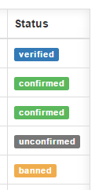

UserPanel support for four different type of user statuses. which are Unconfirmed, Confirmed, Verified and Banned. When new user registered or added by a administrator, that user's user status set as unconfirmed. when that user confirmed his/her email address, his/her user status change to confirmed.
Only administrators have privileges to change user statuses.
